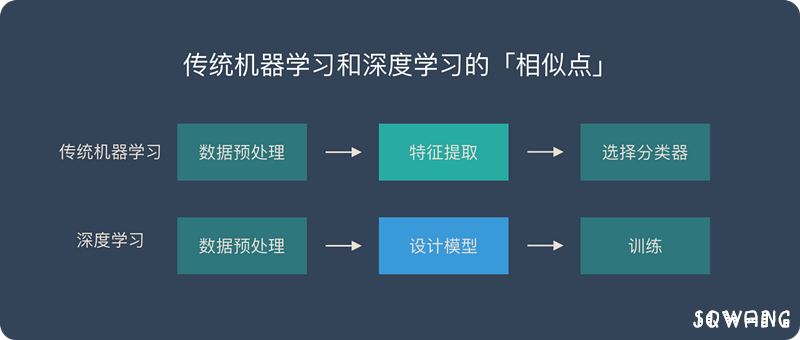
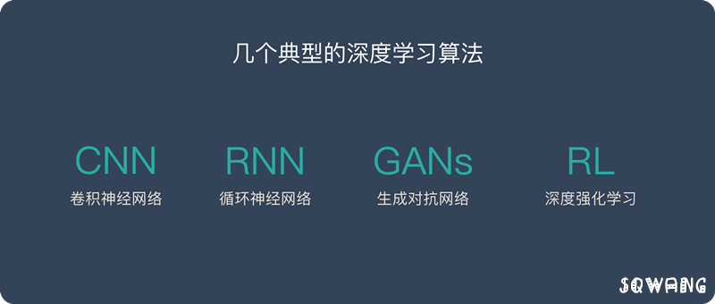

深度学习有很好的表现，引领了第三次人工智能的浪潮。目前大部分表现优异的应用都用到了深度学习，大红大紫的 AlphaGo 就使用到了深度学习。
本文是我个人对深度学习的理解与拙见，在此分享出来，和大家相互交流学习，共勉，文中涉及内容若有纰漏，还请指教。
深度学习、神经网络、机器学习、人工智能的关系
深度学习、机器学习、人工智能
简单来说：
- 深度学习是机器学习的一个分支(最重要的分支)
- 机器学习是人工智能的一个分支
目前表现最好的一些应用大部分都是深度学习，正是因为深度学习的突出表现，引发了人工智能的第三次浪潮。
第一次浪潮（非智能对话机器人）- 20世纪50年代到60年代
1950年10月，图灵提出了人工智能（AI）的概念，同时提出了图灵测试来测试 AI。
图灵测试提出没有几年，人们就看到了计算机通过图灵测试的“曙光”。
1966年，心理治疗机器人 ELIZA 诞生
那个年代的人对他评价很高，有些病人甚至喜欢跟机器人聊天。但是他的实现逻辑非常简单，就是一个有限的对话库，当病人说出某个关键词时，机器人就回复特定的话。
第一次浪潮并没有使用什么全新的技术，而是用一些技巧让计算机看上去像是真人，计算机本身并没有智能。
第二次浪潮（语音识别）- 20世纪80年代到90年代
在第二次浪潮中，语音识别是最具代表性的几项突破之一。核心突破原因就是放弃了符号学派的思路，改为了统计思路解决实际问题。
在《人工智能》一书中，李开复详细介绍了这个过程，他也是参与其中的重要人物之一。
第二次浪潮最大的突破是改变了思路，摒弃了符号学派的思路，转而使用了统计学思路解决问题。
第三次浪潮（深度学习+大数据）- 21世纪初
2006年是深度学习发展史的分水岭。杰弗里辛顿在这一年发表了《一种深度置信网络的快速学习算法》，其他重要的深度学习学术文章也在这一年被发布，在基本理论层面取得了若干重大突破。
之所以第三次浪潮会来主要是2个条件已经成熟：
2000年后互联网行业飞速发展形成了海量数据。同时数据存储的成本也快速下降。使得海量数据的存储和分析成为了可能。
GPU 的不断成熟提供了必要的算力支持，提高了算法的可用性，降低了算力的成本。
在各种条件成熟后，深度学习发挥出了强大的能力。在语音识别、图像识别、NLP等领域不断刷新纪录。让 AI 产品真正达到了可用（例如语音识别的错误率只有6%，人脸识别的准确率超过人类，BERT 在11项表现中超过人类阶段。
第三次浪潮来袭，主要是因为大数据和算力条件具备，这样深度学习可以发挥出巨大的威力，并且 AI 的表现已经超越人类，可以达到“可用”的阶段，而不只是科学研究。
深度学习、神经网络
深度学习的概念源于人工神经网络的研究，但是并不完全等于传统神经网络。
不过在叫法上，很多深度学习算法中都会包含”神经网络”这个词，比如：卷积神经网络、循环神经网络。
所以，深度学习可以说是在传统神经网络基础上的升级，约等于神经网络。
解释深度学习
看了很多版本的解释，发现李开复在《人工智能》一书中讲的是最容易理解的，所以下面直接引用他的解释：
我们以识别图片中的汉字为例。
假设深度学习要处理的信息是“水流”，而处理数据的深度学习网络是一个由管道和阀门组成的巨大水管网络。网络的入口是若干管道开口，网络的出口也是若干管道开口。这个水管网络有许多层，每一层由许多个可以控制水流流向与流量的调节阀。根据不同任务的需要，水管网络的层数、每层的调节阀数量可以有不同的变化组合。对复杂任务来说，调节阀的总数可以成千上万甚至更多。水管网络中，每一层的每个调节阀都通过水管与下一层的所有调节阀连接起来，组成一个从前到后，逐层完全连通的水流系统。
那么，计算机该如何使用这个庞大的水管网络来学习识字呢？
比如，当计算机看到一张写有“田”字的图片，就简单将组成这张图片的所有数字（在计算机里，图片的每个颜色点都是用“0”和“1”组成的数字来表示的）全都变成信息的水流，从入口灌进水管网络。
我们预先在水管网络的每个出口都插一块字牌，对应于每一个我们想让计算机认识的汉字。这时，因为输入的是“田”这个汉字，等水流流过整个水管网络，计算机就会跑到管道出口位置去看一看，是不是标记由“田”字的管道出口流出来的水流最多。如果是这样，就说明这个管道网络符合要求。如果不是这样，就调节水管网络里的每一个流量调节阀，让“田”字出口“流出”的水最多。
这下，计算机要忙一阵了，要调节那么多阀门！好在计算机的速度快，暴力的计算加上算法的优化，总是可以很快给出一个解决方案，调好所有阀门，让出口处的流量符合要求。

下一步，学习“申”字时，我们就用类似的方法，把每一张写有“申”字的图片变成一大堆数字组成的水流，灌进水管网络，看一看，是不是写有“申”字的那个管道出口流水最多，如果不是，我们还得再调整所有的阀门。这一次，要既保证刚才学过的“田”字不受影响，也要保证新的“申”字可以被正确处理。
如此反复进行，知道所有汉字对应的水流都可以按照期望的方式流过整个水管网络。这时，我们就说，这个水管网络是一个训练好的深度学习模型了。当大量汉字被这个管道网络处理，所有阀门都调节到位后，整套水管网络就可以用来识别汉字了。这时，我们可以把调节好的所有阀门都“焊死”，静候新的水流到来。
与训练时做的事情类似，未知的图片会被计算机转变成数据的水流，灌入训练好的水管网络。这时，计算机只要观察一下，哪个出水口流出来的水流最多，这张图片写的就是哪个字。
深度学习大致就是这么一个用人类的数学知识与计算机算法构建起来的整体架构，再结合尽可能多的训练数据以及计算机的大规模运算能力去调节内部参数，尽可能逼近问题目标的半理论、半经验的建模方式。
传统机器学习 VS 深度学习
传统机器学习和深度学习的相似点
在数据准备和预处理方面，两者是很相似的。
他们都可能对数据进行一些操作：
- 数据清洗
- 数据标签
- 归一化
- 去噪
- 降维
传统机器学习和深度学习的核心区别

传统机器学习的特征提取主要依赖人工，针对特定简单任务的时候人工提取特征会简单有效，但是并不能通用。
深度学习的特征提取并不依靠人工，而是机器自动提取的。这也是为什么大家都说深度学习的可解释性很差，因为有时候深度学习虽然能有好的表现，但是我们并不知道他的原理是什么。
深度学习的优缺点
优点1：学习能力强
从结果来看，深度学习的表现非常好，他的学习能力非常强。
优点2：覆盖范围广，适应性好
深度学习的神经网络层数很多，宽度很广，理论上可以映射到任意函数，所以能解决很复杂的问题。
优点3：数据驱动，上限高
深度学习高度依赖数据，数据量越大，他的表现就越好。在图像识别、面部识别、NLP等部分任务甚至已经超过了人类的表现。同时还可以通过调参进一步提高他的上限。
优点4：可移植性好
由于深度学习的优异表现，有很多框架可以使用，例如 Caffe、TensorFlow、Pytorch、Keras、Paddle。这些框架可以兼容很多平台。
目前Google官方已经推出TensorFlow2.0版本，新版本在实际使用方面的便利性较初代框架有巨大提升，同时，还将Keras集成其中，建议使用。
缺点1：计算量大，便携性差
深度学习需要大量的数据很大量的算力，所以成本很高。并且现在很多应用还不适合在移动设备上使用。目前已经有很多公司和团队在研发针对便携设备的芯片。这个问题未来会得到解决。
缺点2：硬件需求高
深度学习对算力要求很高，普通的 CPU 已经无法满足深度学习的要求。主流的算力都是使用 GPU 和 TPU，所以对于硬件的要求很高，成本也很高。
缺点3：模型设计复杂
深度学习的模型设计非常复杂，需要投入大量的人力物力和时间来开发新的算法和模型。大部分人只能使用现成的模型。
缺点4：没有”人性”，容易存在偏见
由于深度学习依赖数据，并且可解释性不高。在训练数据不平衡的情况下会出现性别歧视、种族歧视等问题。
4种典型的深度学习算法

卷积神经网络 – CNN
CNN 的价值：
- 能够将大数据量的图片有效的降维成小数据量(并不影响结果)
- 能够保留图片的特征，类似人类的视觉原理
CNN 的基本原理：
- 卷积层 – 主要作用是保留图片的特征
- 池化层 – 主要作用是把数据降维，可以有效的避免过拟合
- 全连接层 – 根据不同任务输出我们想要的结果
CNN 的实际应用：
- 图片分类、检索
- 目标定位检测
- 目标分割
- 人脸识别
- 骨骼识别
循环神经网络 – RNN
RNN 是一种能有效的处理序列数据的算法。比如：文章内容、语音音频、股票价格走势…
之所以他能处理序列数据，是因为在序列中前面的输入也会影响到后面的输出，相当于有了“记忆功能”。但是 RNN 存在严重的短期记忆问题，长期的数据影响很小（哪怕他是重要的信息）。
于是基于 RNN 出现了 LSTM 和 GRU 等变种算法。这些变种算法主要有几个特点：
- 长期信息可以有效的保留
- 挑选重要信息保留，不重要的信息会选择“遗忘”
RNN 几个典型的应用如下：
- 文本生成
- 语音识别
- 机器翻译
- 生成图像描述
- 视频标记
生成对抗网络 – GANs
假设一个城市治安混乱，很快，这个城市里就会出现无数的小偷。在这些小偷中，有的可能是盗窃高手，有的可能毫无技术可言。假如这个城市开始整饬其治安，突然开展一场打击犯罪的「运动」，警察们开始恢复城市中的巡逻，很快，一批「学艺不精」的小偷就被捉住了。之所以捉住的是那些没有技术含量的小偷，是因为警察们的技术也不行了，在捉住一批低端小偷后，城市的治安水平变得怎样倒还不好说，但很明显，城市里小偷们的平均水平已经大大提高了。
警察们开始继续训练自己的破案技术，开始抓住那些越来越狡猾的小偷。随着这些职业惯犯们的落网，警察们也练就了特别的本事，他们能很快能从一群人中发现可疑人员，于是上前盘查，并最终逮捕嫌犯；小偷们的日子也不好过了，因为警察们的水平大大提高，如果还想以前那样表现得鬼鬼祟祟，那么很快就会被警察捉住。为了避免被捕，小偷们努力表现得不那么「可疑」，而魔高一尺、道高一丈，警察也在不断提高自己的水平，争取将小偷和无辜的普通群众区分开。随着警察和小偷之间的这种「交流」与「切磋」，小偷们都变得非常谨慎，他们有着极高的偷窃技巧，表现得跟普通群众一模一样，而警察们都练就了「火眼金睛」，一旦发现可疑人员，就能马上发现并及时控制——最终，我们同时得到了最强的小偷和最强的警察。
深度强化学习 – RL
强化学习算法的思路非常简单，以游戏为例，如果在游戏中采取某种策略可以取得较高的得分，那么就进一步「强化」这种策略，以期继续取得较好的结果。这种策略与日常生活中的各种「绩效奖励」非常类似。我们平时也常常用这样的策略来提高自己的游戏水平。
在 Flappy bird 这个游戏中，我们需要简单的点击操作来控制小鸟，躲过各种水管，飞的越远越好，因为飞的越远就能获得更高的积分奖励。
这就是一个典型的强化学习场景：
- 机器有一个明确的小鸟角色——代理
- 需要控制小鸟飞的更远——目标
- 整个游戏过程中需要躲避各种水管——环境
- 躲避水管的方法是让小鸟用力飞一下——行动
- 飞的越远，就会获得越多的积分——奖励
你会发现，强化学习和监督学习、无监督学习 最大的不同就是不需要大量的“数据喂养”。而是通过自己不停的尝试来学会某些技能。
总结
深度学习属于机器学习的范畴，深度学习可以说是在传统神经网络基础上的升级，约等于神经网络。
深度学习和传统机器学习在数据预处理上都是类似的。核心差别在特征提取环节，深度学习由机器自己完成特征提取，不需要人工提取。
深度学习的优点：
- 学习能力强
- 覆盖范围广，适应性好
- 数据驱动，上限高
- 可移植性好
深度学习的缺点：
- 计算量大，便携性差
- 硬件需求高
- 模型设计复杂
- 没有”人性”，容易存在偏见
深度学习的4种典型算法：
卷积神经网络 – CNN
循环神经网络 – RNN
生成对抗网络 – GANs
深度强化学习 – RL
高山仰止 景行行止 虽不能至 心向往之
If you like this blog or find it useful for you, you are welcome to comment on it. You are also welcome to share this blog, so that more people can participate in it!